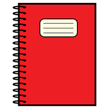
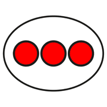
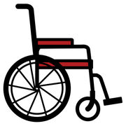

In classe, modulo 11
Progettare e documentare
Come costruire un percorso di matematica dall'agire e come tenerne traccia, con la classe e con le famiglie.
sei passi
Progettare un percorso
 pensare
pensare giocare
giocare scrivere
scrivere- Scegli il concettoUna sola idea per volta: «davanti/dietro», «tanti quanti», «prima/poi».
- Trova il giocoUn gioco motorio che contenga il problema in modo naturale.
- Prevedi la manipolazioneLo stesso problema con oggetti, sul banco.
- Prepara le domandePer la conversazione dopo il gioco.
- Accogli le rappresentazioniDisegni diversi, poi un segno condiviso.
- RilanciaUn problema nuovo che chiede la stessa regola.
tenere
traccia
Il diario di bordo

quadernoscrivere calendario
calendarioAnnotare ogni attività aiuta a vedere il percorso e a migliorarlo. Una pagina per incontro può bastare:
| Voce | Che cosa scrivere |
|---|---|
| Concetto | che cosa volevamo costruire |
| Gioco | come si è svolto e quali varianti sono nate |
| Parole dei bambini | frasi significative, senza nomi se il diario si condivide |
| Rappresentazioni | che tipi di disegni sono comparsi |
| Prossimo passo | che cosa riprendere o cambiare |
Se il diario si pubblica o si condivide: niente nomi, foto o dati dei bambini.
nessuno
resta fuori
Un approccio inclusivo

tutti
sedia a rotelle aiutare
aiutarePartire dal corpo dà a tutti un punto d'ingresso: chi non legge ancora, chi è appena arrivato in Italia, chi fatica con l'astrazione. Il gioco è comune; le richieste si differenziano nella fase di rappresentazione e di formalizzazione.
- per chi ha difficoltà motorie, si adattano gli spazi e i ruoli, non si toglie l'esperienza;
- per chi ha bisogno di tempi più lunghi, si resta più a lungo sui primi gradini;
- per chi corre avanti, si propongono varianti con più vincoli.
Con le famiglie
 famigliagiocare
famigliagiocare casa
casaAi genitori si può proporre una piccola lista di giochi da fare insieme e di incombenze di casa da affidare ai bambini, spiegando perché sono matematica.